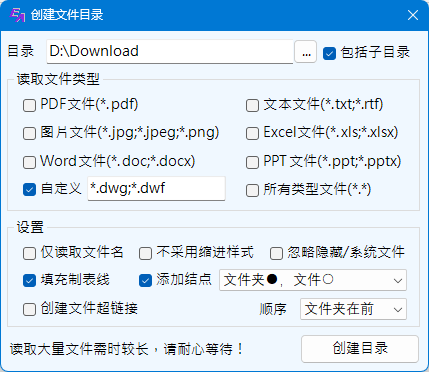
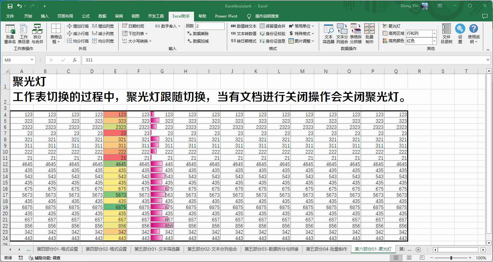

其他功能及设置
Excel助手Ribbon菜单中的其他功能包括聚光灯功能、文件目录树功能。
 |
聚光灯 模式开关，方便在大量数据的情况下，高亮显示选中区域，或行、列的阅读模式。其下为高亮区域的模式选择以及高亮颜色选择，包括行、列、行和列以及单元格4中模式。在聚光灯开启的状态下，可以实时调整高亮区域和高亮颜色。 |
文件目录树 单击文件树目录按钮可调出如下界面：
|  |
该功能的主要目的为快速的为大批的文件创建一个Excel目录清单。可以自定义文件类型，定义多个文件类型时，以分号隔开。 相关设置，仅读取文件名时，将忽略文件夹名称；缩进样式指按照文件目录层级，在Excel填充数据时，同样通过列号后移的方式，展现出文件层次；忽略隐藏/系统文件时，仅指文件，不包括文件夹；填充制表线在缩进样式时，可在缩进的单元格内填充制表线符号；添加结点为以指定的模式给文件夹或者文件名前添加一个标志性的符号；创建超链接时，通过点击该链接可以打开该文件（如果可以双击打开的情况下）；顺序选项指示程序先读入文件夹还是先读入文件。 |
加载项设置 为避免误操作引起程序长时间执行无意义的计算，导致Excel卡死，或者耗费较大系统资源，因此程序对部分操作适用的单元格或者行列数目进行了适当限制。 在需要的情况下，可以进行相应的调整，以满足使用需求。
注意：
1. 聚光灯功能会在同时开启的工作簿，工作表之间自动切换，但当任何工作表点击关闭时（即使点击关闭后又取消关闭流程），聚光灯都将关闭，需再次开启。
2. 文件目录树输出是遍历所有文件，并检索是否为输出文件，再输出至Excel表格，如选择的目录过大，其下文件过多时，可能花费较长时间。
示例一： 聚光灯演示。
示例二： 创建文件目录树